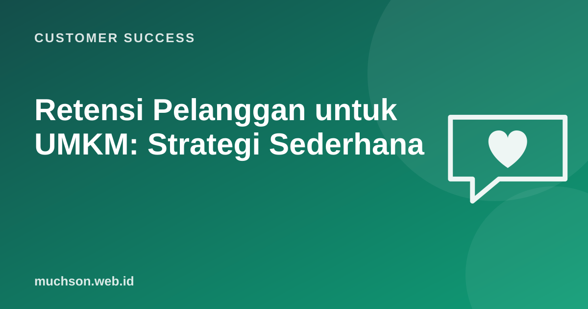

Beranda › Artikel › Customer Success
Customer SuccessRetensi Pelanggan untuk UMKM: Strategi Sederhana
Sebagai pemilik toko optik di Madiun, saya merasakan sendiri bahwa pelanggan yang kembali dan membawa keluarganya adalah tulang punggung usaha. Prinsip customer success yang dipakai perusahaan software ternyata sangat cocok untuk UMKM, asalkan diterapkan dengan alat yang sederhana.

Mengapa retensi penting untuk usaha kecil
- Mendapat pelanggan baru butuh iklan, promo, dan waktu; pelanggan lama sudah percaya.
- Pelanggan setia cenderung membeli lebih banyak seiring waktu dan merekomendasikan kepada orang lain.
- Rekomendasi dari mulut ke mulut adalah pemasaran paling murah dan paling dipercaya di lingkungan lokal.
Langkah 1: catat pelanggan Anda
Tanpa data, tidak ada retensi yang terencana. Cukup spreadsheet atau buku catatan dengan kolom berikut:
| Kolom | Contoh | Untuk apa |
|---|---|---|
| Nama dan nomor WhatsApp | Bu Sari, 0812... | Menghubungi |
| Tanggal pembelian terakhir | 12 Maret 2026 | Pengingat waktu kembali |
| Apa yang dibeli | Frame titanium, lensa 1.67 | Saran yang relevan |
| Catatan khusus | Minus anak naik cepat | Perhatian personal |
| Izin dihubungi | Ya | Menghormati privasi |
Minta izin sebelum menyimpan dan memakai nomor pelanggan untuk pengingat atau promo, dan beri cara mudah untuk berhenti. Ini sesuai prinsip UU Pelindungan Data Pribadi dan menjaga kepercayaan.
Langkah 2: hubungi pada saat yang tepat
Pesan yang membantu (perawatan, pengingat kesehatan) diterima jauh lebih baik daripada promo yang dikirim massal setiap hari.
Langkah 3: program loyalitas yang sederhana
- Kartu stempel: pembersihan atau servis kelima gratis.
- Bonus rekomendasi: pelanggan dan teman yang dirujuk sama-sama mendapat potongan.
- Perlakuan khusus: prioritas antrean atau layanan rumah untuk pelanggan setia lanjut usia.
- Hindari program rumit dengan poin yang sulit dipahami.
Langkah 4: layanan setelah pembelian
Bagi banyak UMKM, momen setelah pembelian adalah tempat loyalitas dibentuk: garansi yang dihormati tanpa berbelit, setel ulang gratis, dan respons cepat saat ada masalah. Inilah "customer success" versi toko.
Langkah 5: ukur pelanggan yang kembali
Tanya jawab
Alat apa yang dibutuhkan?
Bagaimana bila pelanggan merasa terganggu?
Apakah diskon besar meningkatkan loyalitas?
Sumber dan bacaan lanjut
- Reichheld dan Sasser (1990): Zero Defections (ringkasan Bain)
- Customer lifetime value (artikel terkait)
- AI untuk UMKM (artikel terkait)